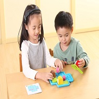
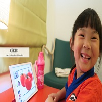
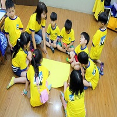

星街☄️幼兒園
課程介紹
課程特色

課程設計理念（兒童為中心、遊戲中學習）
以幼兒為中心的課程設計理念，教學設計會從幼兒角度出發，顧及幼兒需要和已有生活經驗、興趣及能力並重視課程 「幼兒教育新模式」 學習取向在教學實踐方面，教師會運用5E教學元素(環境、經驗、探索、表達、賦權)設計有意義的學習內容，以促進幼兒全面的發展。 世界上也不存在一種最好的能適合所有文化背景中所有幼兒的課程。朱家雄(2003)故此，本校規劃各級幼兒的課程與教學模式時亦會採用多種教學模式以配合不同需要的幼兒，以配合現今世界的多元發展所需的未來人才。 繪本教學
繪本教學是本校幼、低班的主要教學模式之一。運用繪本教學是因為幼兒是故事的愛好者，一本優質的繪本就能滿足

主題教學
主題教學是本校各級推行的主要教學模式。教師會選擇一個與幼兒生活息息相關的主題而設計的一種教學模式。透過教師

方案教學
方案教學是以幼兒為出發點而展開的。教師會先根據幼兒的生活經驗和興趣來確定主題。在實踐過程中，教師主要是引導 |